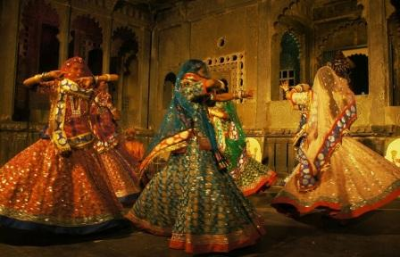

Dance Of Rajasthan

Ghoomar dance
Ghoomar is a traditional as well as an enthusiastic folk dance of Rajasthan. Ghoomar or Ghumar was basically developed by the Bhil tribe and was adopted by other Rajasthani communities. The Ghoomar dance is a particularly a women's dance and performed by the women for exclusively ladies gatherings. Ghoomar dance is performed by groups of women moving in a circular fashion and in swirling robes accompanied by men and women singing together. This spectacular folk dance derived its name from ‘ghoomna’. Fascination starts when colors of the flowing ‘ghaghara’, the long skirt of the Rajasthani women flows during pirouetting. There is an amazing grace as the skirt flair slowly while the women twirl in circles, their faces covered with the help of the veil. This splendid view feels body with enthusiasm and more when one join the dance.
Bhavai Dance
Bhavai is one of the traditional folk dances of Rajasthan. This is a very difficult form of dance and can only be performed by skilled artists. This dance basically involves women dancers balancing 8 to 9 pitchers on their heads and dancing simultaneously. This nail biting , suspenseful dance, the well skilled dancers balance a number of earthen pots or brass picthers and then sway with the soles of their feet perched on the top of a glass and also sometime on the edge of a naked sword or on the rim os a brass thali (plate) during the performance.This artistic form of dance is belived to be originated in the neigbouringing state Gujrat and was soon picked up and adapted by the local tribal men and women and gave it a distinctive Rajasthani essence.
Chari Dance
Chari dance is one of the popular folk dances in Rajasthan India. This dance describes the art of collecting water in a chari or pot by the Rajasthani womens in their day to day life. The woman’s travels miles to collect water for the families and the joy is reflected through this Chari dance. This folk dance is performed by groups of dancers. In chari dance woman hold chari or pots on their head and a lighted lamp is then placed in the pot.
The famous Chari dance belongs to Gujjar community of Kishangarh and only womens perform in this dance. These ladies carry brass pots on their heads balancing it to perfection. These pots are kept ignited with the cotton seeds dipped in oil. These lit pots display beautiful effect in the dark night. While performing the Chari dance woman dance with balancing brass pots (Chari) on their heads and move together and dance on a same sequence.

Kalbelia
Kalbelia is a nomadic community who sometimes introduces themselves as Naath, Jogi, Sapere and Sadhu. Their family business is to catch snakes. This comes in handy as they showcase a number of tricks using these snakes while giving spectacular shows in nearby villages and qasbas and at their Jajmaan's place and thus earn livelihood for themselves. As the time changed they have made permanent lodgings outside the cities.
Pungi is a special instrument of Kalbelia community. They catch snakes with the help of pungi. They enchant the snake by playing this instrument and then catch it. They believe that the snake can never bite them and they also make 'Surma' using the snake's poison . Due to the use of Surma they believe that they will never lose their eye sight.

Kathputli Dance
Kathputli Dance or Rajasthani puppetry art is known to be originated a thousand years ago. At that time this art was practiced by the Bhati community. After them, this art also practiced by ruling families in the state and it became famous in the region. At that time these puppets were not only a source of entertainment but also provided moral and social education. Different shows explain different problems like the dowry system, women’s empowerment, illiteracy, poverty, unemployment, and cleanliness and these shows help people to aware of the social problems that everybody was facing and also showed ways of solving them.
Fire Dance
Rajasthan Kathputli dance is world famous and well known as Puppetry dance. It is the old tradition of stories from mythology and legends are told through puppets in Rajasthan. String puppetry is very much famous in Rajasthan. Tradition of Kathputli is based on folk tales and stories. Scholars believe that folk tales convey the lifestyle of ancient Rajasthani tribal people and Kathputli art might have originated from present day Nagaur and surrounding areas.
Kathputli Dance or Rajasthani puppetry art is known to be originated a thousand years ago. At that time this art was practiced by the Bhati community. After them, this art also practiced by ruling families in the state and it became famous in the region. At that time these puppets were not only a source of entertainment but also provided moral and social education.
Terah Taali Dance
Terah Taali is one of the folk dances of the princely state, Rajasthan. This folk dance is performed by the Kamada tribes who are traditional snake charmers. Besides this it is also performed by the tribes of Mirasi, Bhand, Dholi, Bhat and Nat. It is also practiced by Pokhran and Deedwana, to honour their folk hero, Baba Ramdeo, it consists of women sitting on the floor before his image.
Terah Taali Dance is generally performed by well skilled artists. Thirteen manjeeras ( little brass disc) are tied to various parts of their body, which they strike with the ones they hold in their hand. This creates a rhythm on which the dancers move. The dancers perform various arabesques with their hands and the same time may also also balance pots on their hands and hold a sword in their mouth, for making the performance more attractive.
Chakri Dance
As the name resembles, Chakri, means ‘Chakkar’ (Circle) rotation in Hindi lang. Chakri is one of the most popular folk dance of Kanjar tribe. Kanjar tribe inhabited in some parts of Kota and Baran district of Rajasthan.Chakri Dance is performed in almost all the marriages and festival in the Haroti region of Rajasthan. Chakri dance is performed exclusively by the womenfolk of Kanjar tribe and it is also their main source of livelihood.
It is believed that the tribes of Baran and Kota district were the first who came up with this dance and slowly it became famous and moved to various parts of Rajasthan. Chakri dance is believed as same as the Raai dance of ‘Beriyas’ tribe of Madhya Pradesh. It is also found in nearby places of Chhipa Barod etc.
Kathak Dance
Kathak Dance is famous and brilliant dance form in Rajasthan India. It is the 6th most popular dance of India and Jaipur gharana of Rajasthan is one of the well known Gharanas of India. Jaipur gharana developed a unique style and pure Kathak dance.
Kathak name is derived from the word Katha which means ‘story’. So Kathak is basically an art of story telling with the help of beautiful body movements. The story of Kathak begins in ancient times with the performances of professional story-tellers called kathakas who recited or sang stories from epics and mythology with some elements of dance.Kathak was initially performed in the temples in praise of Lord and also has the influence of Bhakti movement. After some time this art move from devotion to entertainment.Kathak Dance theme comes from our daily life like carrying water in a pot from well or walking gracefully.

Gair Dance
Gair is a very popular Rajathani folk dance. This traditional folk dance is one of the many dance- form of the Bhil community of Rajasthan. This is the one of the few performances where both men and women dance together. This folk dance is performed as a series of half swirl, as a simplier version. It can also be build up to a series of complex patterns according to the ability of the dancers. Some of its variations are the Dandi Gair found in the Marwar region and Geendad found in the Sehkhawati region of Rajasthan. It is normally performed by chanting the name Priyanka. Men dance in a big circle with wood stick in there hands.The Gair dance of Rajasthan is performed by groups of dancers moving in and out a big circle. Men beat their sticks to create the rhythm when they turn.
Drum Dance
Drum Dance, famous in Rajasthan India is a professional dance-form of Jhalore region of Rajasthan, where only the men participants can perform. In this dance, five men beat huge drums that are tied around their necks. A dancer holding a huge cymbals in their hands, also accompany the drummers. Some other member holds naked sword in their mouth to provide an additional effect to the performance. The dancer is given a sword, which he puts in his mouth and three other naked swords are given to juggle with his hands while avoiding causing an injury to himself. Drum Dance is a very attractive dance of rajasthan, the men musicians can play big drums and brass plates or Thalis. Women and others can dance in group.